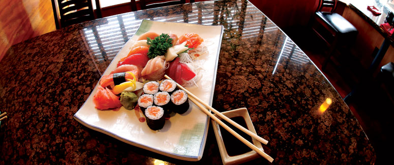

A phone first homepage
Most people looking for sushi in Mt Lebanon are standing outside with a phone. Right now they get a desktop page scaled down, so the menu and the number take pinching and zooming to read.
The homepage has no mobile viewport tag at all, so a phone gets the desktop layout shrunk down to thumbnail size. There is no meta description, so Google writes your search snippet for you. The page also still loads urchin.js, the tracker Google retired in 2012, and the Little Tokyo Bistro link in the layout now leads to a 404. This is a private direction page, not a public redesign.
What we would sharpen
Most people looking for sushi in Mt Lebanon are standing outside with a phone. Right now they get a desktop page scaled down, so the menu and the number take pinching and zooming to read.
The layout still points at the Little Tokyo Bistro page, and that page returns a 404. Every dead link teaches a visitor that the rest of the information might be stale too.
With no meta description, Google writes its own snippet. One line naming sushi, hibachi and Mt Lebanon does the work instead.
Frank and Diane Lin have run this room since 1997, with miso and udon made fresh daily. That is the first thing a new customer should read, not the last thing they find.
The full version is a fast, mobile first site with the search tags done properly, a quote or contact form that sends you real details, and your Google listing lined up with it. $1,500 flat, three to four weeks, on the domain you already own.